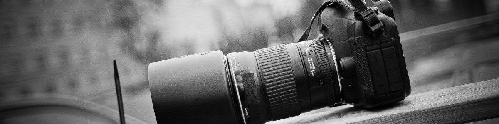

My Story
Hi, I'm Joe — a passionate photographer based in New York, specializing in portraits, landscapes, and wedding photography. With over a decade behind the lens, I've developed an eye for the fleeting, beautiful moments that tell the story of a person, a place, or an experience.
What started as a hobby quickly became my life's work. I believe every frame should feel honest and timeless. Whether it's a golden-hour landscape or a candid laugh at a wedding reception, I strive to capture the world as it truly is — raw, real, and beautiful.
Work With Me
What I Specialize In
Portraits
Individual, family, and professional headshot sessions crafted with natural light and authentic expression.
Weddings
Full-day coverage documenting your love story from the first look to the final dance on the floor.
Landscapes
Fine art landscape photography for prints, featuring breathtaking scenes from across the country.